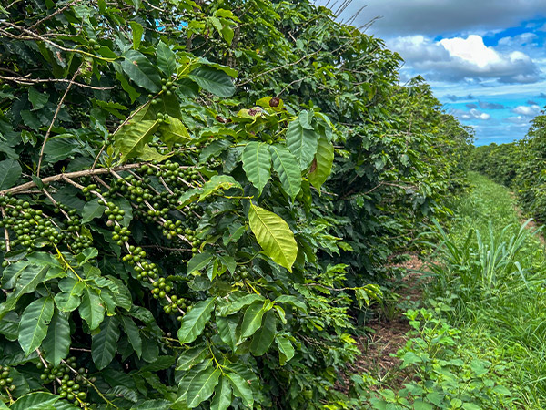
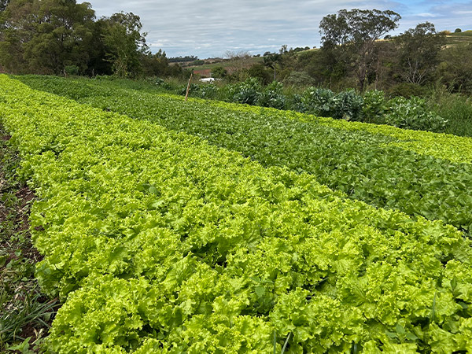
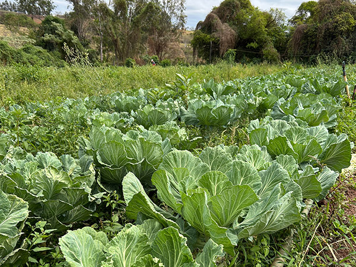
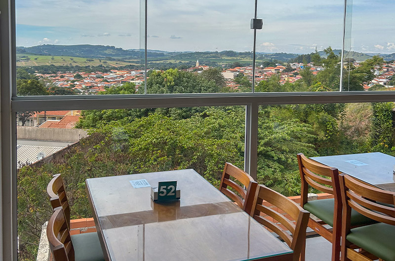
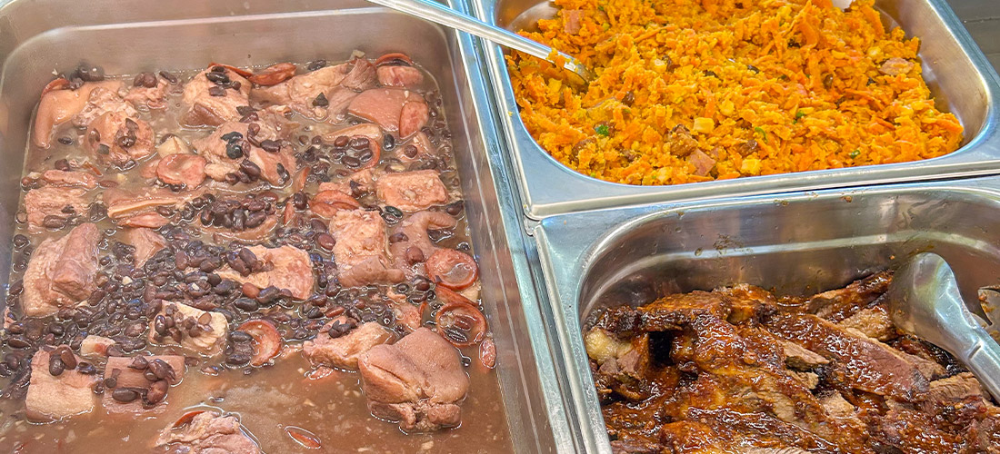

Faça a melhor parada da rodovia MG-449[cite: 24]. No Restaurante Carijó, além do tradicional Self-Service Livre[cite: 19], você saboreia a essência da roça com hortaliças e cafés artesanais de produção própria.
Abrir Rota no GPS da EstradaAqui no Carijó, nós não apenas servimos comida; nós cultivamos tradição. Grande parte do frescor que você encontra na nossa mesa é produzido com carinho no nosso próprio sítio familiar. É o verdadeiro orgulho de Minas Gerais servido na beira da pista!

Colhido, tratado e preparado diretamente na nossa propriedade[cite: 16]. Aquele cafezinho fresco com o aroma autêntico da roça para te dar energia e foco no restante da viagem.

Hortaliças cultivadas com água limpa e sem defensivos pesados. Colhemos nossas alfaces e verduras crocantes direto da terra para abastecer o buffet todas as manhãs.

Da couve fininha que acompanha a feijoada aos ingredientes principais dos pratos típicos. O verdadeiro gosto da culinária mineira caipira começa no cuidado com o nosso plantio.
Espaço sob medida com amplo espaço para carretas e caminhões, ônibus de viagem e carros de passeio manobrarem com total tranquilidade.
Esqueça o mormaço da rodovia. Almoce e descanse em um ambiente com ar-condicionado fresco e acolhedor[cite: 13].
Banheiros higienizados a todo momento e estrutura de banho pronta para o motorista renovar as energias[cite: 12].
Mantenha seu celular e o GPS da viagem carregados enquanto aproveita a sua parada[cite: 17].
Fique conectado com a sua família e mande mensagens mesmo nos pontos cegos de sinal de operadora[cite: 16].
Sua família viaja completa! Seus animais de estimação são muito bem-vindos em nossa estrutura[cite: 15].
Além do tempero da roça [cite: 20], o Restaurante Carijó oferece um belíssimo mirante com vista panorâmica deslumbrante para a cidade[cite: 8]. O cenário perfeito para sentar perto da vidraça, esticar as pernas, relaxar os olhos do asfalto e garantir que a viagem siga muito mais leve e agradável.
Como Chegar Até Nós

A parada mais econômica, forte e reforçada para quem vive e trabalha cruzando as estradas de segunda a sexta-feira[cite: 3].
O ponto de encontro tradicional para famílias em viagem de lazer e turistas que buscam a gastronomia raiz de Minas[cite: 5, 20].
📍 Localização Estratégica: Estamos situados exatamente em frente à Fábrica da Cory em Arceburgo - MG[cite: 25].
Nossa estrutura possui amplo espaço pra carreta e caminhões estacionarem , sendo totalmente aberta e visível da pista[cite: 26]. Fique atento às nossas placas de indicação dispostas na rodovia quilômetros antes da sua chegada[cite: 26]!
Estrutura aberta das 6h às 23h para conveniência e lanches rápidos[cite: 28]. Nosso buffet completo funciona em[cite: 28]: